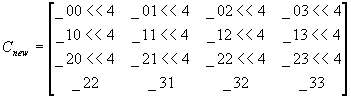

#include <nitro/gx/g3_util.h>
void G3_LoadTexMtxEnv(const MtxFx44 * mtx);
// 以下ディスプレイリスト（コマンド列）作成用API
void G3B_LoadTexMtxEnv(GXDLInfo* info, const MtxFx44 * mtx);
void G3C_LoadTexMtxEnv(GXDLInfo* info, const MtxFx44 * mtx);
void G3BS_LoadTexMtxEnv(GXDLInfo* info, const MtxFx44 * mtx);
void G3CS_LoadTexMtxEnv(GXDLInfo* info, const MtxFx44 * mtx);
| mtx | テクスチャ行列にロードする行列へのポインタ |
なし。
行列モードをTextureモードにしてテクスチャ行列をセットします。この際、Normalソース・Veretxソースに設定した場合に行わなければならない補正を行います。 結果として、新しいカレントテクスチャ行列Cnewは以下のようにセットされます。

G3*_LoadTexMtxTexCoord, G3*_MtxMode
Ver. 2004/01/19